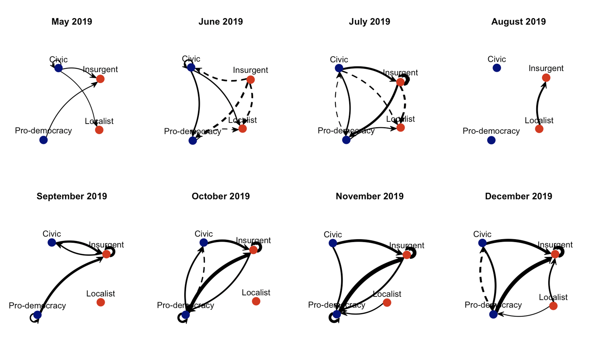
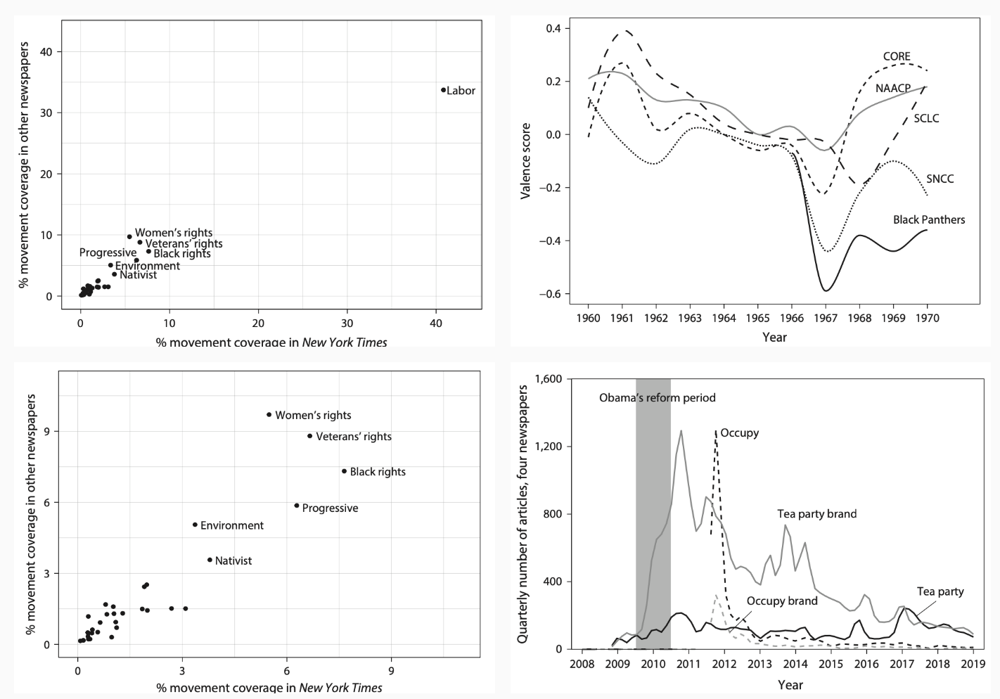
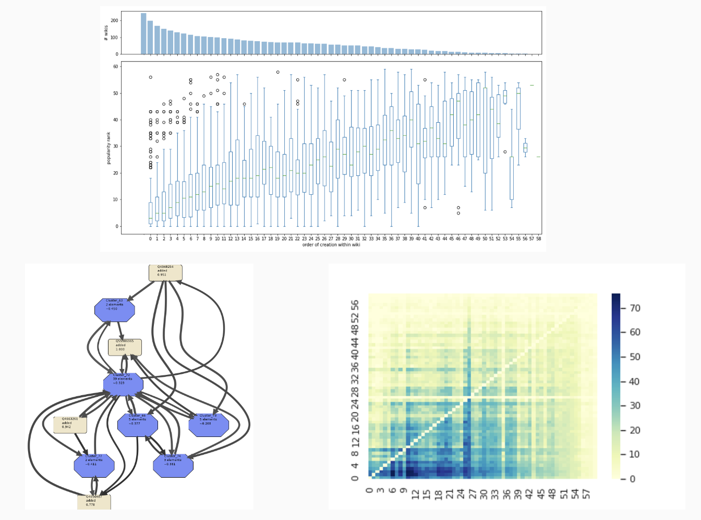
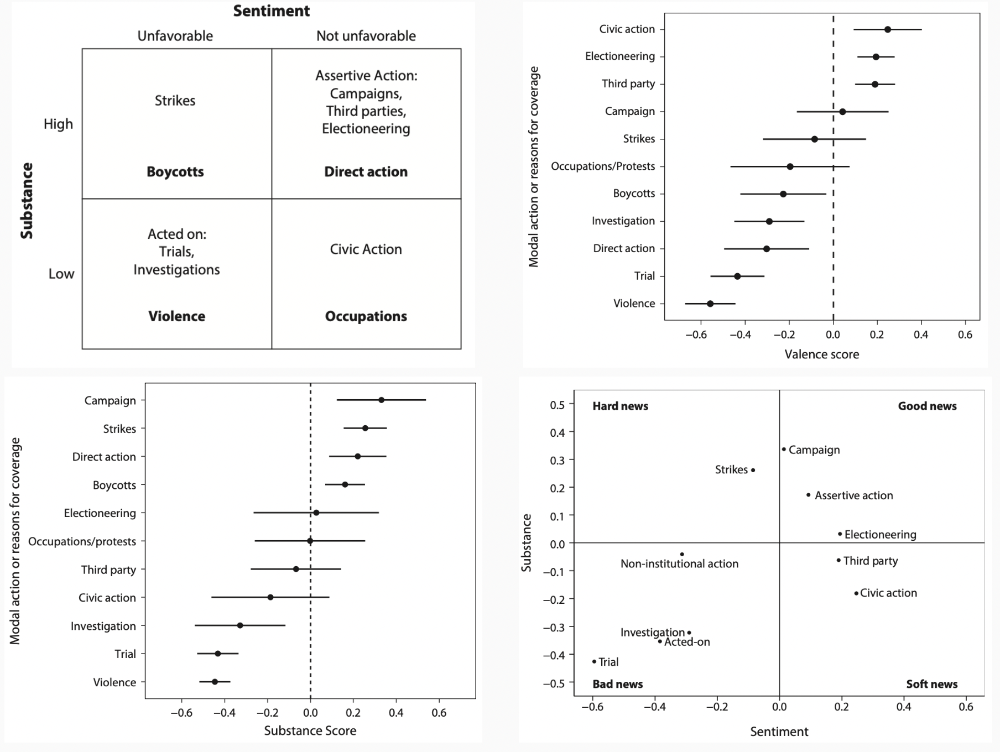
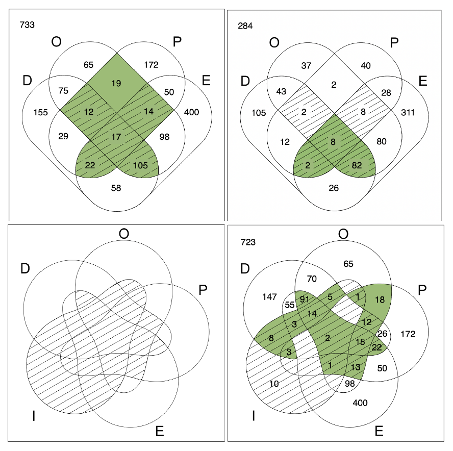
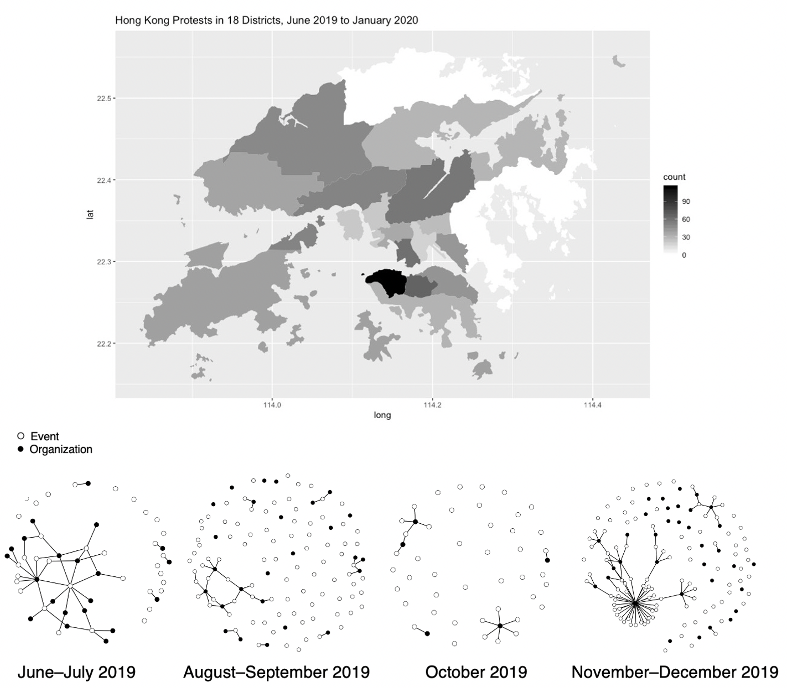
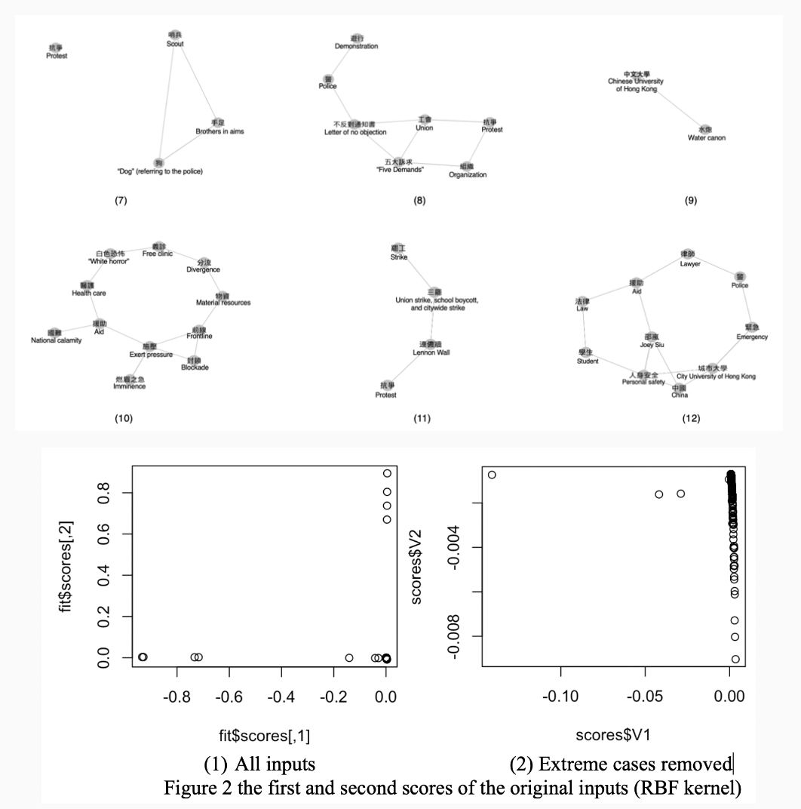
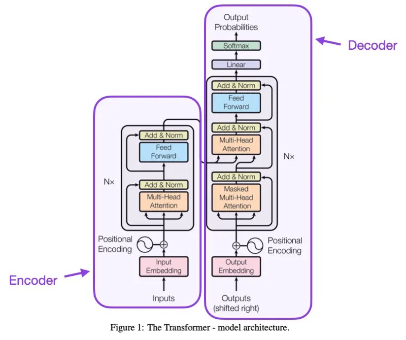

Research
Political sociology · Computational methods · Social movements

Unmaking Boundaries: Inter-faction Dynamics during the 2019 Hong Kong Anti-Extradition Law Amendment Bill Protests
★ 2024 Mayer N. Zald Distinguished Contribution to Scholarship Student Paper Award, ASA Collective Behavior and Social Movements Section
Why, when, and how do social actors engage one another across established categorical boundaries? This paper examines boundary-spanning behaviors of moderates and radicals within social movements, analyzing how activist groups endorse one another despite their differences and potential negative repercussions of such endorsements. It argues that boundary-spanning behaviors of movement actors are both adaptive and performative, in response to short-term events such as interactions with various institutional actors, brief windows of political openness, elite endorsements, and international support. These relational events alter political access and audience scope, affecting how movement actors prioritize their images of worthiness, unity, numbers, and commitment, which in turn shapes inter-faction relations. This analysis leverages original inter-organizational endorsements network and political event datasets extracted from over 730,000 Telegram posts during the 2019 Hong Kong Anti-Extradition Amendment Bill protests. Blockmodels and relational event models results show that moderates and radicals are more likely to endorse across factional lines when interactions with institutional actors signal restricted access to the polity and expose movement actors to a broad audience.

What Drives the News Coverage of US Social Movements?
What drives the news coverage of social movements in the professional news media? We address this question by elaborating an institutional mediation model arguing that the news values, routines, and characteristics of the news media induce them to pay attention to movements depending on their characteristics and the political contexts in which they engage. The newsmaking characteristics of movements include their disruptive capacities and organizational strength, and the political contexts include a partisan regime in power, benefitting from national policies, and congressional investigations. To appraise these arguments, we analyze approximately 1 million news articles mentioning 29 social movements over the twentieth century, published in four national newspapers. We use negative binomial regression analyses and separate time-series analyses of the labor movement to assess the model's robustness across different movements, time periods, and news sources.

Coalitions Under Threat: Analyzing the 2019 Hong Kong Anti-Extradition Protests Using Telegram Social Media Data
This paper examines how threats posed by indiscriminate and selective repression affect the shape and structure of interorganizational coalitions during the 2019 Anti-Extradition Law Amendment Bill (Anti-ELAB) protests in Hong Kong. The analysis relies on an original political event dataset and an organization-event network dataset. These datasets were produced utilizing syntactic event coding techniques based on Telegram posts, which Hong Kong protesters used to distribute information, plan future actions, and crowdsource news. This study investigates the coalition networks across the movement's four stages, each of which was marked by a particular type and degree of repression. The findings indicate that indiscriminate and selective repression have varied effects on coalition networks.

Beyond the Protest Paradigm: Four Types of News Coverage and America's Most Prominent Social Movement Organizations
What determines the quality of coverage received by social movement organizations when they appear extensively in the news? Research on the news coverage of social movement organizations is dominated by case studies supporting the "protest paradigm," which argues that journalists portray movement activists trivially and negatively when covering protest. However, movement organizations often make long-running news for many different reasons, mainly not protest. We argue that some of this extensive news will lead to worse coverage—in terms of substance and sentiment—notably when the main action covered involves violence. We analyze the news of the twentieth century's 100 most-covered U.S. movement organizations in their biggest news year in four national newspapers. Topic models indicate that these organizations were mainly covered for actions other than nonviolent protest. Employing qualitative comparative analyses, we find that the main action behind news strongly influences its quality, and there may be several news paradigms for movement organizations.

How to Analyze the Influence of Social Movements with QCA? Combinational Hypotheses, Venn Diagrams, and Movements Making Big News
Under which conditions do social movements receive extensive attention from the mainstream news media? We develop an institutional mediation model that argues that combinations of the news-heightening characteristics of movements, including their disruptive capacities, organizational resources, and political orientation, and political contexts bring extensive attention to movements. We appraise these combinational arguments by examining 29 social movements across 100 years in four national newspapers using qualitative comparative analysis (QCA). We also employ Venn diagrams to identify and illustrate key analytical issues and anomalies, including constrained diversity in observational data and instances when unexpected combinations of conditions produce a consistent result.

Emerging Consensus: How Do Activist Groups Converge on Their Demands?
How do different activist groups reach a consensus about their demands? A diffusion model would expect organizations with the most resources and connections to be most influential. An alternative hypothesis highlights the "fringe effects" of radical organizations and the mediation effects of media. Using text data from 125 Telegram channels over a six-month period, I empirically capture the activists' cognitive schemas using word-occurrence semantic networks and kernelized Principal Component Analysis to capture the convergence of framings over time. My work reveals that activist groups rarely arrived at any one single common demand, but some level of consensus emerges as moderate organizations incorporate the frames of radical groups. This paper is among the few existing attempts to analyze how communication networks and networks of meaning coevolve.

Text Analysis with Generative Large Language Models
Scholars utilizing text data to create datasets have traditionally faced scalability issues, as they rely on trained human coders to code variables that are relevant to their substantive topics. Transformer-based Large Language Models (LLMs) are now promising tools that may further enhance our ability to utilize text data and create large-scale datasets. This paper applies LLMs to content analysis based on newspaper articles and compares the new approaches to existing data coding and sentiment analysis methods. We showcase LLMs' ability to achieve accuracy comparable to manual coding standards, and provide a framework on how to effectively use LLMs by addressing key considerations such as model selection, prompt engineering, and validations. We also discuss the importance of addressing bias, replicability, and data-sharing concerns.

One Path or Many? Policy Development and Diffusion Across Wikipedia Language Editions
Do comparable self-governing collective action institutions converge on comparable policy systems? We test both theories using data on 60 policies shared by 245 Wikipedia language editions. We find that policies that are shared tend to be shared widely, that nearly every shared policy can be found in the English edition, and that the clearest predictor of policy adoption order is policy popularity across editions. Although we do not definitively eliminate the possibility that language editions follow multiple paths in converging on their policy systems, the evidence suggests that editions follow a single noisy developmental path, potentially suggesting strong influence across editions and a stronger role of common structural constraints than diverse cultural constraints.